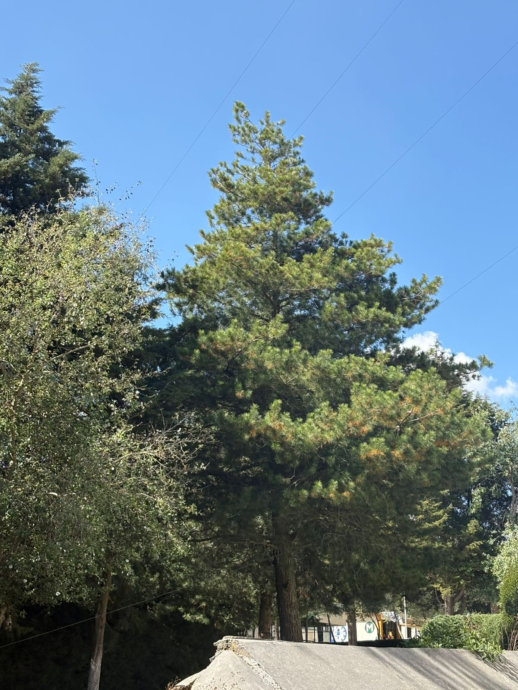

Pino
Crecimiento: 3 a 5 años.
Cuidados: Sol directo, riego regular y poda.
Importancia: Produce oxígeno y protege el suelo.
Ver más información
Ayacahuite
Crecimiento: 10 a 15 años.
Cuidados: Clima templado y riego moderado.
Importancia: Limpia el aire.
Ver más información